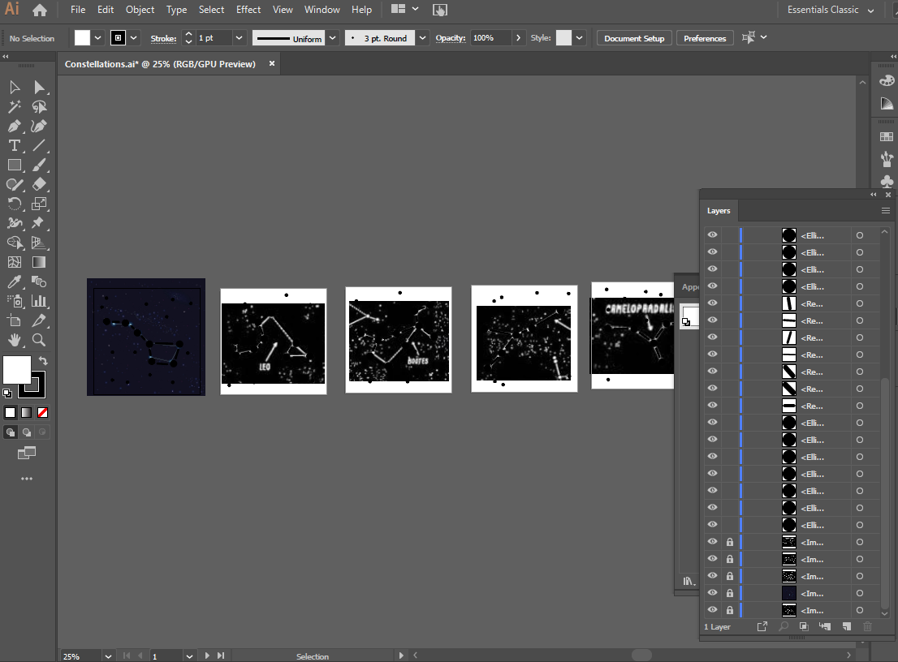

Assignment 4: Star Box
I was feeling inspired by the copper material and wanted to create something cool that I would be excited to put on my shelf, so I designed a star box.
Here's the link to the Onshape file.
Here's a link to the other project files, including the constellation .ai and .dxf files, Gerber exports, and Onshape .dxf exports.
I started with some initial sketches of a design. I thought it would be fun to use the CNC to actually mill a circuit rather than just edge cut pieces, so I decided to incorporate a light source and simple circuit into the design.
I started with some initial sketches and ideas. I decided that I wanted to put different constellations into each face of the box.
My husband is an electrical engineer and gave some guidance on what parts to order to create an LED light switch and how to design the circuit so the light would actually turn on!
I ordered a battery holder, a LED, a small switch, and a coin cell CR-232 battery.
I started in Onshape doing the initial design of the box. Initially, I designed everything without any tolerances. I went back later and revised (a few times, after a few CNC mills that didn't get me the fit I needed).
The linear array tool was very helpful here in creating all the different notches that I needed.
A little bit of extrude got me an approxmiation of the thickness of the FR1 materia.
I knew from our lecture that I couldn't mill inside corners, so I created holes/dogbones on every inside corner. I originally made the holes exactly 1/32" but later ran into issues in Bantam saying it couldn't cut the holes, so I expanded them to be 1mm, which seemed to be the minimum size that Bantam would allow.
I used transform/part copy to create the other sides of the box.

Then, I made the top of the box, which was the same type of piece that was going to go near the bottom and hold the LED, battery, and switch. Again, linear array was very helpful here.
Now that I had the box fitting together digitally, it was type for my constellations. I used Illustrator to essentially trace over existing reference images of constellations. I originally started by doing this in Onshape but it was really inefficient at creating artistic and more organic designs, which is why I switched to Illustrator.

I made the main star size 3.25mm diameter, the small stars 1.5mm, and the connecting lines as rounded rectangles with a width of 1/32" and a corner radius of 1/64". I thought that it would work perfectly with the drill bit size, but I had to adjust this later when Bantam threw errors on the connecting lines. I did the adjustments in Onshape, though, using offset to adjust them all to be .2mm larger, then deleting the original curves. This was annoying and time-consuming, but not too bad in the scheme of things.
When I had all the constellations, I brought them in as DXFs and placed them on each of the faces of the box in a sketch, then extruded them ("remove") to cut the shapes out.
I also needed to account for placement of the battery holder and the light switch on the bottom of the box. To do this, I modeled them very crudely so I had a good sense of their overall length, width, height, and pin placement.
I placed them in the right spot then created rectangles around each of the pins and filleted the corners to create slots. This was another thing I had to adjust after bringing the files into Bantam. Overall, had to resize the slots to be larger so they could be milled.
Next, it was time to design the actual circuit in Kicad. I brought the bottom piece into KiCad through the method in the tutorial.
My husband explained which connections had to happen but I needed to actually draw lines to mill the traces. This ended up being more complicated than I was expecting.
I initially tried to just use "route tracks" in the F.Cu layer, but I kept getting blocked... essentially it didn't want me to draw over the edge cuts.
I made a workaround by placing footprints over the pin holes. I created footprints that were essentially oval pads of a certain width and height positioned at the right spots. And I found a footprint in the library for the LED part. However, KiCad was still unhappy connecting footprints when they were over the edge cuts so I basically scootched them over until they were off the edge cuts, routed the tracks, and then moved them back on top of the edge cuts. This seemed to work okay, though it took about an hour to get the workflow figured out.
I also had to do a bit of back and forth with Bantam to get it happy enough with the footprint sizes to actually mill it correctly, but I was able to get it to a happy place.
I made sure to include the F.Cut and Edge.Cuts layers when I plotted the bottom piece and brought it into Bantam with both layers (and I did NOT uncheck traces - only for this specific piece.
So all the parts seemed to be working now. I was ready to start milling!
I kicked off one of the side pieces first. Seemed to go well and I was excited! But then I tested the holes in the bottom by pushing the corner of a piece of FR-1 into it, and it was too tight. Ugh. I adjusted in OnShape and milled a second side piece to test the edge fit. Took 25 minutes for each side piece.
The bottom hole worked well that time, but the edges were too tight to fit. They came out way different in size from the measurements I had in OnShape, which was weird.
I made further adjustments in OnShape and started another side piece. Another 25 mins.
These dimensions worked! The fit was VERY snug, which was was I wanted So I had my settings and was good to go on all of them.
From there, I was able to mill without too much trouble, except for once when I think one of the plates slipped so the bit was dragging from point to point. My only major pain point here was just timing. It took around 25 minutes for each face.
I also needed to actually attach the light switch components into the bottom piece.
They slipped into the slots perfectly, and my husband helped me solder the pieces in place since I hadn't ever soldered before!
Soldered up and ready to go into the box!
And the light switch worked, which was SUPER exciting!
Then, I just had to put all pieces together. Everything fit really tightly, which made it take a bit of time to get every piece connected and flush. I was worried for a bit that I still had the tolerances too tight but eventually everything pressed into place.
And I had an awesome star box, that I am really excited about and proud to display.
Plus, it looks even better at night with the light on.
Thanks to Josh for the helpful tutorial on using Onshape and Hannah N. for helping me figure out how to publically share the link to the Onshape file!